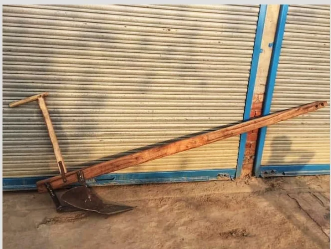

OBJECT ARCHIVE · ਵਿਰਾਸਤੀ ਵਸਤੂ

An object shaped by everyday knowledge.
The hal is closely associated with the agrarian life of Punjab. Its form, materials and method of use varied by region, soil and period. Oral accounts from farming families can help document local names and changes in design.
ਹਲ ਪੰਜਾਬ ਦੇ ਖੇਤੀਬਾੜੀ ਜੀਵਨ ਨਾਲ ਡੂੰਘਾ ਜੁੜਿਆ ਹੋਇਆ ਹੈ। ਇਸ ਦੀ ਬਣਾਵਟ, ਸਮੱਗਰੀ ਅਤੇ ਵਰਤੋਂ ਇਲਾਕੇ, ਮਿੱਟੀ ਅਤੇ ਸਮੇਂ ਅਨੁਸਾਰ ਬਦਲਦੀ ਰਹੀ ਹੈ। ਕਿਸਾਨ ਪਰਿਵਾਰਾਂ ਦੀਆਂ ਮੌਖਿਕ ਯਾਦਾਂ ਰਾਹੀਂ ਇਸ ਦੇ ਸਥਾਨਕ ਨਾਂ ਅਤੇ ਬਣਤਰ ਦੇ ਬਦਲਾਅ ਦਰਜ ਕੀਤੇ ਜਾ ਸਕਦੇ ਹਨ।
Materials and making
Wood; locally varying metal fittings. Materials and construction may differ by locality and period; this description should be matched to a dated, photographed example before being treated as a complete technical specification.
ਲੱਕੜ; ਇਲਾਕੇ ਅਨੁਸਾਰ ਲੋਹੇ ਦੇ ਹਿੱਸੇ। ਸਮੱਗਰੀ ਅਤੇ ਬਣਤਰ ਇਲਾਕੇ ਤੇ ਸਮੇਂ ਅਨੁਸਾਰ ਬਦਲ ਸਕਦੀ ਹੈ। ਪੂਰੀ ਤਕਨੀਕੀ ਜਾਣਕਾਰੀ ਮੰਨਣ ਤੋਂ ਪਹਿਲਾਂ ਮਿਤੀ ਵਾਲੀ ਅਸਲ ਤਸਵੀਰ ਅਤੇ ਸਥਾਨਕ ਉਦਾਹਰਨ ਨਾਲ ਇਸ ਦੀ ਪੁਸ਼ਟੀ ਕਰਨੀ ਚਾਹੀਦੀ ਹੈ।
Traditional use
Opening and turning soil for cultivation.
ਖੇਤੀ ਲਈ ਮਿੱਟੀ ਨੂੰ ਚੀਰਨਾ ਅਤੇ ਪਲਟਣਾ।
ਰਿਕਾਰਡ ਦੀ ਸਥਿਤੀ: ਇਸ ਵਸਤੂ ਦੇ ਇਲਾਕਾਈ ਨਾਂ, ਪਰਿਵਾਰਕ ਯਾਦਾਂ ਅਤੇ ਅਸਲ ਸਰੋਤ ਬਾਰੇ ਹੋਰ ਜਾਣਕਾਰੀ ਇਕੱਠੀ ਕੀਤੀ ਜਾਣੀ ਬਾਕੀ ਹੈ।